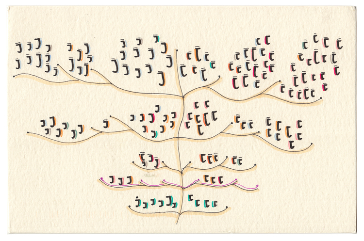

source dear data http://www.dear-data.com/all/
L’objectif du cours est d’utiliser le langage de programmation statistique R et d’outils en ligne simple afin de mettre en valeur vos résultats d’analyses statistiques. Le cours est constitué d’exemples de codes R et d’exercices que l’étudiant appliquera directement sur son ordinateur et sa console R sous cette forme :
print('Hello world !')## [1] "Hello world !"Dans un premier temps, nous allons découvrir comment importer et explorer différentes données sous R. Puis nous allons apprendre comment préparer les données afin de créer de magnifiques graphiques et applications interactives. Ces outils acquis durant le cours vous permettront de mettre en valeur vos études ou reportings, qui vous seront utiles dans un contexte académique ou professionnel.
Plan
Ce cours est un TD informatique constitué d’exemples et d’exercices que l’étudiant reproduira sur son ordinateur. Durant ces 15 heures de cours les points abordés sont :
Mode d’évaluation
L’évaluation de ce cours consiste en la création d’un programme R sur la mise en forme des données utilisées pour votre mémoire. Le projet peut être mené individuellement ou en binôme.
Le 14 mars, 10h00/13h00 * 1h cours magistral*
Au début du cours seront présentés la data visualisation en général et le logiciel R.
\(\simeq\)2h travaux dirigés
Un rappel sur l’utilisation de la console et de l’environnement de développement intégré (IDE) R studio sera effectué au début de cette première partie. Des fonctions de base sous R permettant d’importer les données depuis un fichiers texte, csv, excel et même directement depuis le web seront présentées. On examinera comment R stocke les données sous forme de variables, comment les manipuler et de créer des graphiques…
Le 13 avril, 10h00/13h00 \(=\) 3h travaux dirigés
Dans les cours du précédent semestre vous avez appris les fonctions R de méthodes statistiques descriptives et de modélisation de base, tels que mean(), median(), sum(), lm(), summary()… Il existe des plots aussi de base qui permettent d’examiner les différents jeux de données et modèles statistiques. Ces graphiques constituent des arguments et des preuves pour mettre en évidence les résultats que vous avancez et leurs pertinences de manière simple et synthétique. Les graphiques que nous allons créer sont entre autres :
Dans le cours du semestre dernier vous avez appris comment modéliser des relations entre différents jeux de données à l’aide de modèle linéaire lm() et ARIMA… Nous allons découvrir les diverses graphiques diagnostiques de ces modélisations statistiques qui permettent entre autres de repérer les meilleures variables explicatives, de rejeter les mauvaises et de vérifier ces résultats de modélisation.
\(=\) 6h travaux dirigés
Nous avons passé en revue différentes manières de présenter nos données sous forme d’illustration statistique. Dans cette partie, les outils de visualisation interactive faisant appel à des librairies codées en java et en html 5 seront présentés (html widget, shiny et r markdown). Les outils comme shiny, r markdown et plotly permettent de créer de véritables petites applications de visualisations et d’applications de vos résultats. Par exemple, le syllabus que vous lisez est entièrement fait sous R à l’aide de r markdown.
\(=\) 3h tp
Le but de ce TP est de commencer à travailler sur les données de votre mémoire à l’aide d’un programme R et des notions apprises.
Sur la visualisation des données
Sur les bases de R
Autres